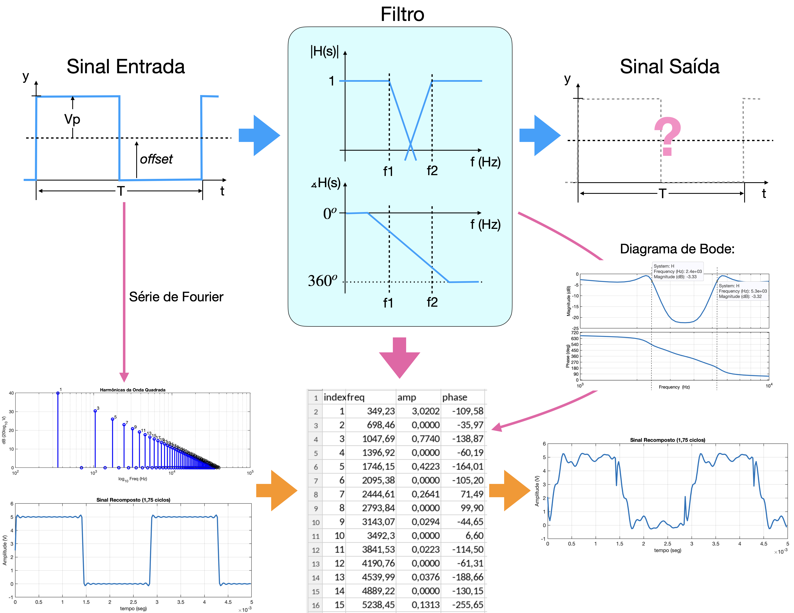
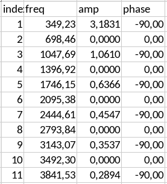
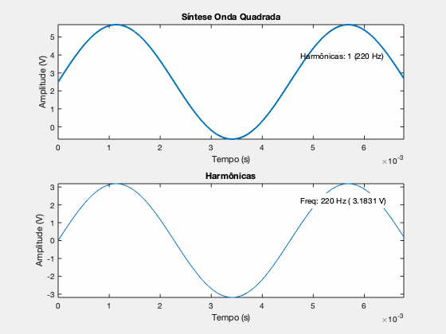
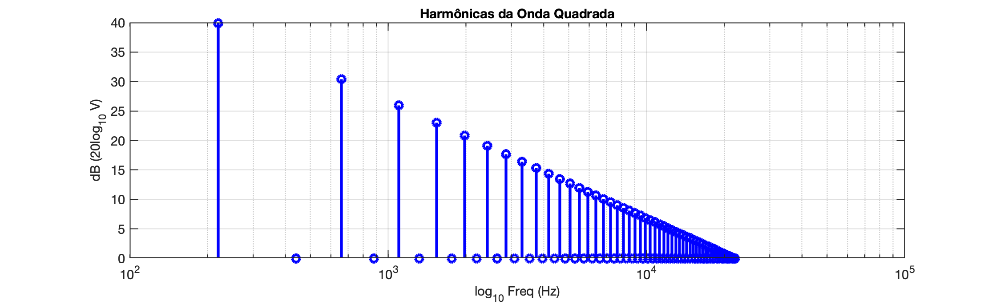

Trabalho Final 2026/1EnunciadoO filtro Rejeita-FaixaDicas1. Comandos do Matlab para gerar Diagramas de Bode mais “customizados”:2. Cálculo do Impacto do Filtro3. Idéia para Resulução do Trabalho4. Uso de Arquivos CSV no Matlab5. Exemplo de Resultados ObtidosDatas & Entregáveis:
Simule o resultado da aplicação de um filtro rejeita-faixa sobre uma onda quadrada ― guiar-se pela figura abaixo:

Sabe-se que:
A onda quadrada oscila em 349,23 Hz (Fá 4a-oitava), com amplitude de 2,5 Volts de pico e offset de 2,5 Volts (ou seja, um sinal TTL).
A onda quadrada passa pelo filtro rejeita-faixa elíptico que atenua a banda passante entre: [2400, 5300] Hz. As 7a e 15a harmônmicas serão atenuadas. A função transferência deste filtro corresponde à:
Mais detalhes sobre este filtro e sua função transferência seguem mais abaixo.
O trabalho deve mostrar:
a) Síntetize da Onda quadrada usando Série de Fourier (considerar entre 75 e 100 harmônicas (frequência máxima entre 26192 Hz e 34923 Hz). Deve mostar numa tabela ao menos os componentes das 20 primeiras harmônicas. Usar o formato exponecial da Série:
b) Montar ou apresentar uma tabela relacionando harmônica

c) Mostre algum diagrama espectral da Onda quadrada relacinando amplitude
Com relação ao filtro: a) mostrar o diagrama de Bode do filtro (amplitude e fase), ressaltando as frequências
Aplique a função transferência do filtro sobre os componentes espectrais da onda quadrada (série de Fourier calculada anterior), descobrindo a atenuação e defasagem provocada pelo filtro em todas as suas harmônicas. a) Mostre numa tabela como o filtro vai atenuar e defasar o sinal de entrada para as 20 primeiras harmônicas (da frequência de base = 349,23 Hz até 6.984,6 Hz). Aplique estes dados sobre os dados espectrais da onda quadrada e gere uma nova tabela ou vetor de amplitudes e defasagens finais para cada harmônica da onda quadrada. b) Mostre numa outra tabela o resultado da aplicação do filtro sobre os componentes da onda quadrada para as primerias 20 harmônicas.
Por fim, volte a usar a Série de Fourier para recompor o sinal temporal obtido na saída deste filtro para este sinal de entrada. Mostre a forma de onda resultante final, depois de passar por este filtro.
Sugere-se usar o comando sound( . ) para ouvir os sinais e o comando audiowrite( . ) do Matlab para a criação de arquivos wave tanto do sinal original de entrada quanto do sinal de saída (o filtrado).
Disponibilizar os códigos usados para resolver este trabalho e os eventuais aruqivos wave.
Note que:

Segue um espectro da onda Quadrada (de 220 Hz):

A idéia deste trabalho foi avaliar como a eliminação de certos componentes de um sinal o afeta.
Neste caso em particular, aplicar um filtro rejeita-faixa para remover as harmônicas ímpares entre a 7ª e a 15ª de uma onda quadrada, resulta num timbre mais oco, redondo e parecido com o de uma flauta ou clarinete. O som perderá o "brilho" metálico e a aspereza característicos de uma quadrada, ganhando então um caráter mais suave. Note que as harmônicas mais altas contribuem com o "corpo" agudo e o som cortante característico da onda quadrada.
No caso deste trabalho vamos usar filtros elípticos para rejeitar uma dterminada faixa. Este filtro foi formado por um filtro passa-baixsa (FPB) e um filtro passa-altas (FPA) conectados em paralelo a um circuito somador usando Amp.Op.. Filtros elípticos foram usados pois permitem uma taxa de decaimento bem mais rápida que um filtro Butterworth (ou outros tipos de filtros). Do ponto de vista de álgebra de diagrama de blocos, a função transferência final fica:
O FPB possui frequência de corte em
Foi defindo uma queda máxima de 3 dB nas frequências de corte (parâmetro Rp) e estipulado uma atenuação mínima de 20 dB na banda passante (parâmetro Rs) na função ellip( . ) do Matlab usada para encontrar as funções transferência dos filtros. E foi estipulado o usao de filtros de 3a-ordem.
A função ellip( . ) do Matlab segue a síntaxe:
xxxxxxxxxx[b,a] = ellip(n,Rp,Rs,Wp,fType)onde:
b= corresponde ao polinômio do numerador;a= corresponde ao polinômio do denominador;n= corresponde à ordem requerida para o filtro;Rp= ripple máximo tolerado para o fitro associado sua frequência de atuação;Rs= atenuação mínima requerida para o filtro na banda em relação à banda passante.Para saber mais sobre esta função entre em Matlab Help Center > ellip.
Então os seguintes comandos foram executados para obter a função transferência deste filtro:
xxxxxxxxxx% Calculando equações dos filtrosw1=2*pi*f1;w2=2*pi*f2;n = 3; % ordens dos filtros% No caso de filtro ellíptico:% Rp = decibeis no ripple (queda em fc)Rp=3; % 3 db == atenuação de 0.70795 (ou 1.4125x)% Rs = decibeis mínimos na banda passanteRs=20; % 20 db == atenuação de 0.1 (ou 10x)% filtro Passa-Baixa:[num_PB, den_PB] = ellip(n, Rp, Rs, w1, 'low', 's');H_FPB = tf(num_PB, den_PB); % tf do filtro Passa-Baixa% filtro passa-altas[num_PA, den_PA] = ellip(n, Rp, Rs, w2, 'high', 's');H_FPA = tf(num_PA, den_PA); % tf do filtro Passa-Alta% tf final do filtroH = H_FPB + H_FPA;[num,den]=tfdata(H,'v'); % permite separa polinômios do numerador e denominadorVocê pode usar a função zero( . ) e pole( . ) para obter os zeros e pólos deste filtro:
xxxxxxxxxx>> zero (H)ans = -12943 + 18294i -12943 - 18294i 3848.2 + 26367i 3848.2 - 26367i 2721.6 + 18648i 2721.6 - 18648i>> pole(H)ans = -78797 + 0i -3008.5 + 34365i -3008.5 - 34365i -1269.5 + 14502i -1269.5 - 14502i -6372.9 + 0iO diagrama de Bode deste fitro corresponde apareceu na figura inicial desta página (acima).
Exemplo de uso de projeto de filtro Butterworth, ver Projeto de Filtro Butterworth.
xxxxxxxxxx% comandos associados com função bodeplotopts = bodeoptions; % cria um objeto para editar propriedades do Bodeopts.MagUnits = 'abs'; % ou use: opts.MagUnits = 'dB';opts.PhaseWrapping = 'off'; % opcional (teste)opts.FreqUnits = 'Hz';figure; bodeplot(H, opts) xlim([100 100E3]) % restringir para faixa de interesseExemplos ver: Diagramas_de Bode usando Matlab .
Você pode calcular o ganho/atenuação e defasagem provocada por um filtro sobre certa frequência, subtituíndo
fazendo algo como:
x
w = 2*pi*freq; % freq em Hz passa para rad/sclear j % para limpar qualquer eventual variável j já usada anteriormente (gera conflito)s = j*w; % faz a transformação s --> jw (gera número imaginário)Num_jw = polyval(num, s); % substitiu e calcula numericamente valor anterior nos termos em sDen_jw = polyval(den, s);G = Num_jw/Den_jw; % calcula H(jw) = número complexoG_abs = abs(G); % ganho em valores absolutosG_db = 20*log10(abs(G)); % ganho em dBphase_rad = angle(G); % defasagem em radianosphase_deg = rad2deg(phase_rad); % defasagem em grausObviamente que será necessário realizar este cálculo para cada frequência desejada que faz parte das harmônicas do sinal de entrada.
E note que a forma que o filtro afeta a magnitute e fase de cada componentes do sinal pode ser calculado como:
xxxxxxxxxxamp(k) = amp_origem(k)*ganho_filt(k);hase(k) = phase_origem(k) + phase_filt(k);onde o índice k acima corresponde ao número da harmõnica do sinal de entrada.
Se
Sugere-se o desenvolvimento de script (códigos) separados no trabalho para resolução de cada etapa do mesmo e eventual uso de arquivos CSV para troca de dados entre os mesmos.
Ver: Idéias_para Resolução_do Trabalho.html .
A página Trabalhando com arquivos CSV no Matlab exempifica como trabalhar com arquivos CSV no Matlab.
A página Resultados Trabalho permite ter uma idéia dos resultados sendo esperados.
Deadline (prazo para entrega) do trabalho:
Entregáveis:
Enviar por e-mail para: fpassold@upf.br.
Fernando Passold, em 02/06/2026 – 06/06/2026.